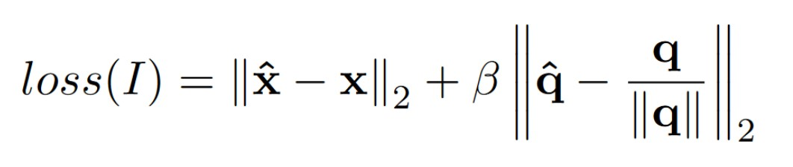

Apr 14, 2018
This project outlines our implementation of PoseNet++, a deep learning framework for passive SLAM. It is a full robot re-localization pipeline which uses PoseNet as the sensor model, GPS/Odometry Data as the action model and GTSAM as the backend to generate the trajectory of the robot (and subsequently the map of the environment). The framework is able to re-localize the robot within 2m of it's ground truth in medium scale environments. Our aim in this project is to demonstrate that using Convolutional Neural Networks (CNNs), in combination with a mono-camera system, provides a viable solution for the kidnapped robot problem and an accurate solution to the SLAM problem in general.
To run the code from the repository, the following dependencies are required:
Please follow respective documentations for correct installation of the above. The code is tested on the following datasets:
Apr 14, 2018
PoseNet is a Deep Learning Framework which can regress the 6 DOF pose of a monocular camera from a single RGB Image in an end-to-end manner with no additional engineering or graph optimization. It can operate both indoor and outdoor in real time, and takes about 5ms to compute a frame. The original implementation of PoseNet uses GoogLeNet from the ImageNet Challenge and obtains approximately 2m and 3° accuracy for large scale outdoor scenes and 0.5m and 5° accuracy indoors. It leverages transfer learning from large scale classification data and is robust in several conditions such as difficult lighting, motion blur, different camera intrinsics and even the same scene captured in different seasons(eg. Winter, Summer, Monsoon). Due to this robustness in different conditions, it has an advantage over SIFT based feature registration.
Our implementation of PoseNet is based on the VGG-16 Network, mainly due to the ease of implementation. The accuracy obtained using the VGG-16 is almost the same as GoogLeNet, with a Top-5 error rate of 7.3% compared to 6.67% (on the GoogLeNet). The only major drawback is that training and testing on VGG-16 is slower due to the number of parameters involved. The only change made to the network is that we replace the last SoftMax layer to a Fully Connected Regression Layer. The loss function is given as follows:

The x denotes the position in the cartesian frame, whereas, q denotes the orientation. The orientation is taken in quaternion for the University of Cambridge and Fetch Dataset, and euler angles for the NCLT dataset. The procedure followed for training is:
- Scale Down each of the 1920 x 1080 images till the smallest dimension is 256px
- Make 128 random crops of size 224 x 224 using the scaled down image
- Associate corresponding ground-truth labels (pose/ quaternion) to each of the images
- The labels are in the following format - pose: (x, y, z) , orientation: (w, x, y, z)
once all the images are generated, with it's corresponding ground-truth labels, they are fed to PoseNet for training.
For testing purposes, no pre-processing needs to be done on the images. The original frequency of the images from the NCLT dataset is 5Hz. To obtain real-time performance, we down-sample the images to a frequency of 2Hz. Once downsampled, the corresponding odometry labels are obtained from the dataset. The ground-truth labels are generated using PoseNet and are added to GTSAM as a "measurement factor". The odometry labels from the dataset (or VSFM when used) are added as an "odometry factor" to GTSAM.
Apr 14, 2018
Visual SfM is a technique used in Photogrammetry used to generate the pose of a camera from an image of the scene. The basic approach of Visual SfM is as follows:
- Take images of a scene from multiple angles/ positions
- Generate all the SIFT feature points for each of the taken images
- Match all the images using the generated feature points
- Generate the Essential Matrix using which further 6-DOF poses can be regressed.
For our use case, we directly use one of the
available tools to generate the labels. We use the Fetch Robot DataSet for generation of the ground-truth labels to train PoseNet. The odometry is obtained from the robot itself.
Apr 14, 2018
The Georgia Tech Smoothing and Mapping (GTSAM) is an opensource SAM toolbox written in C++, with wrappers for Pyhton/ MATLAB. The classes implement smoothing and mapping (SAM) in robotics and vision, using factor graphs and Bayes networks as the underlying computing paradigm rather than sparse matrices. Factor graphs are graphical models that are well suited to modeling complex estimation problems, such as Simultaneous Localization and Mapping (SLAM) or Structure from Motion (SfM). They are bipartite graphs consisting of factors connected to variables. The variables represent the unknown random variables in the estimation problem, whereas the factors represent probabilistic information on those variables, derived from measurements or prior knowledge. Bayes networks are another type of graphical models which are directed acyclic graphs.
GTSAM provides state of the art solutions to the SLAM and SfM problems, but can also be used to model and solve both simpler and more complex estimation problems. It exploits sparsity to be computationally efficient. Typically measurements only provide information on the relationship between a handful of variables, and hence the resulting factor graph will be sparsely connected. This is exploited by the algorithms implemented in GTSAM to reduce computational complexity. Even when graphs are too dense to be handled efficiently by direct methods, GTSAM provides iterative methods that are quite efficient regardless. In our project we use incremental smoothing and mapping using the Bayes tree (iSAM2) as our back-end optimization tool. Based on Bayes Tree structure, the first order least square matrix can be updated efficiently according to the factor dependencies.
In our project, as discussed previously, we use the odometry factor from the dataset(or robot) and the PoseNet factor in GTSAM for mapping the result obtained in real-time.
Team
Apr 14, 2018
The team working on this project comprises of:
-
Christopher Schmotzer
-
Dante Luo
-
Ray Zhang
-
Sahib Dhanjal
-
Snigdhaa Hasija